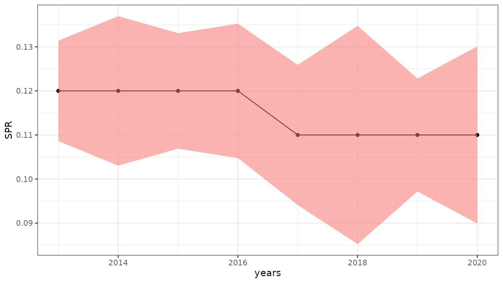
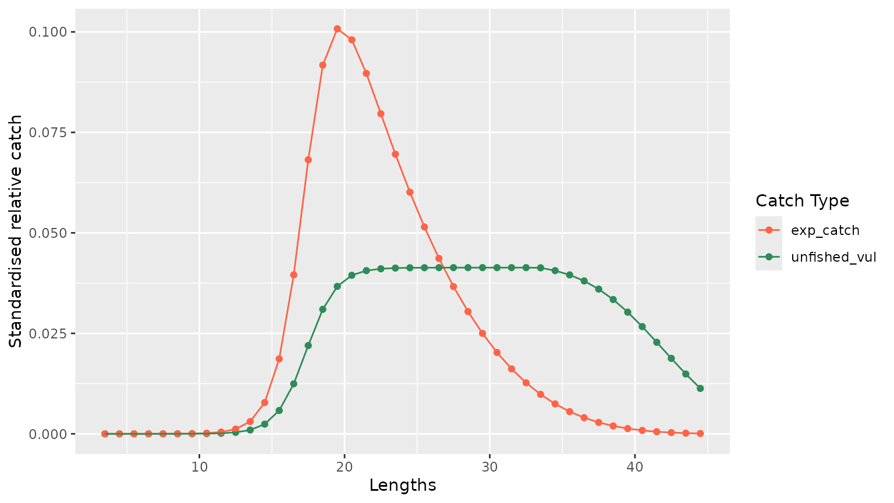
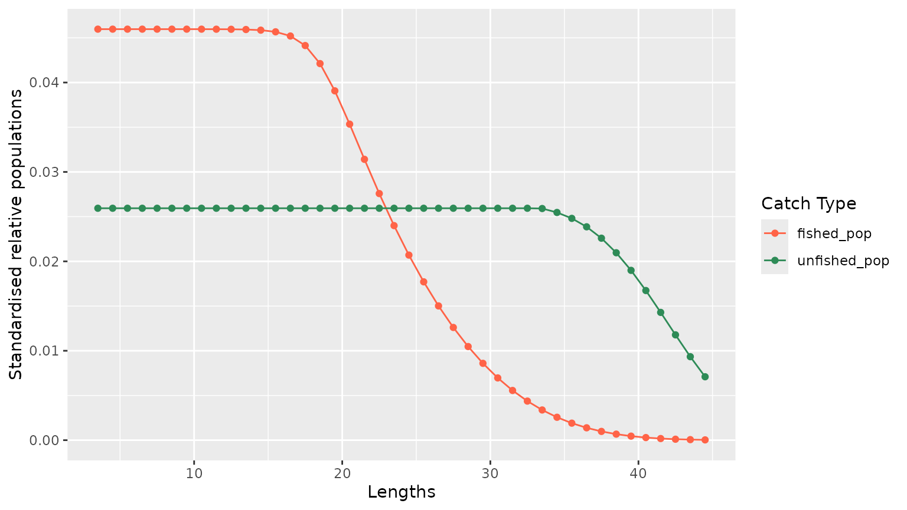

LB-SPR tutorial
lbspr_use_case.Rmd1. Installing lbmstoolbox package
For this vigenette to work the lbmstoolbox package must
be installed and exist in whatever R’s libpath of yours. To do so you
can install it widely on the system by using
devtools::install_github(..) or locally by
renv::install. if ran interactively, ensure that the
working directory is set to the vignettes folder - use
setwd as suits you best.
2. Read sampling and biological data
A data sample has been provided to showcase how both algorithm
interfaces work. The first element of the list is the catch’s length
composition that the model will assess. This structure, in turn, stores
two dataframes: i) a long one where years and lengths
are laid as rows and ii) a wide one where years are set
as columns and lengths as rows. Both dataframes contain
MeanLength, the name of the column holding the length
classes.
The second element is a list with the biological parameters of the
species being evaluated, which we will call
spp.demersal.
spp_sampling_details <- readRDS("data/spp_test_data.rds")2.3 Showcase wide dataframe
spp_sampling_details$bio_params
#> $linf
#> [1] 42.41
#>
#> $k
#> [1] 0.21
#>
#> $t0
#> [1] -1.202
#>
#> $lwa
#> [1] 0.012
#>
#> $lwb
#> [1] 3.011
#>
#> $l50
#> [1] 19.45
#>
#> $M
#> [1] 0.354
#>
#> $max_age
#> [1] 9
#>
#> $rec_variability_mean
#> [1] 0.748
#>
#> $rec_variability_sd
#> [1] 0.293
#>
#> $max_age
#> [1] 9
#>
#> $fecb
#> [1] 3.011
#>
#> $l95
#> [1] 22.373. Run LB-SPR
3.1 Build biological parameters required by LB-SPR
Please visit LBSPR
documentation for further details. fecb defines the
relationship between size and fecundity. By default, LB-SPR sets it to
3. We use the provided b exponent obtained from the
weight-length relationship.
The biological parameters here provided contains the union of those required by LB-SPR and LIME. Let’s strip off LIME’s specific parameters and build LBSPR’S missing ones.
bio_params <- spp_sampling_details$bio_params
# We need to provide MK
bio_params$mk <- round(bio_params$M / bio_params$M, 2)
# ... And get rid of those that not required
bio_params$M <- NULL
bio_params$t0 <- NULL
bio_params$max_age <- NULL
bio_params$rec_variability_mean <- NULL
bio_params$rec_variability_sd <- NULL
bio_params
#> $linf
#> [1] 42.41
#>
#> $k
#> [1] 0.21
#>
#> $lwa
#> [1] 0.012
#>
#> $lwb
#> [1] 3.011
#>
#> $l50
#> [1] 19.45
#>
#> $max_age
#> [1] 9
#>
#> $fecb
#> [1] 3.011
#>
#> $l95
#> [1] 22.37
#>
#> $mk
#> [1] 13.2 Run LB-SPR
If LB-SPR is run with the flag simul set to TRUE,
re-runs the simulation function to provide extra details for each time
step used as follows:
- Observed catch-at-length
- Relative observed catch-at-length (each catch is divided by the maximum)
- Standardised length structure of the underlying fished population
- Standardised length structure of the underlying unfished population
- Standardised estimated catch as a result of applying the estimated selectivity to the estimated fished population
- Standardised estimated catch as a result of applying the estimated selectivity to the estimated unfished population
iim_lbspr <- lbmstoolbox::LbsprLbms$new(
bio_params,
catch_data
)
result_lbspr <- iim_lbspr$run(simul = TRUE)
#> A blank LB_pars object created
#> Default values have been set for some parameters
#> File not found. A blank LB_lengths object created
#> Fitting model
#> Year:
#> 1
#> 2
#> 3
#> 4
#> 5
#> 6
#> 7
#> 8
#> ngtg increased to 18 because of small bin size
#> ngtg increased to 18 because of small bin size
#> ngtg increased to 18 because of small bin size
#> ngtg increased to 18 because of small bin size
#> ngtg increased to 18 because of small bin size
#> ngtg increased to 18 because of small bin size
#> ngtg increased to 18 because of small bin size
#> ngtg increased to 18 because of small bin size3.3 Breaking down results
Results are provided in two flavors: i) evaluation where estimates of the model are held and ii) simulation where the aforementioned extra details can be found. Within this section, also the raw output yielded by the simulation function are provided, should you be interested in doing more with it.
In addition, the estimate dataframe provides the confidence intervals
of FM and SPR. These columns are prefixed by
lower and upper, respectively.
3.3.1 Estimates dataframe
result_lbspr$evaluation$estimates %>%
head(3)
#> SL50 SL95 FM SPR years lower_spr upper_spr lower_fm upper_fm
#> 1 17.37 20.44 2.68 0.12 2013 0.1086088 0.1313912 2.506141 2.853859
#> 2 17.38 20.48 2.72 0.12 2014 0.1030489 0.1369511 2.394831 3.045169
#> 3 17.37 20.41 2.75 0.12 2015 0.1068953 0.1331047 2.426899 3.0731013.3.2 Simulation dataframes
Below an example of the simulation dataframe for one single time step. The relevant columns are:
-
unfished_pop: length structure of the unfished population. -
fished_pop: length structure of the fished population. -
unfished_vul: estimated catch yielded by the estimated unfished population and selectivity. -
expected_catch: estimated catch yielded by the estimated fished population and selectivity. -
real_catch: observed catch in absolute numbers -
relative_catch: Relative-to-maximum observed catch
result_lbspr$simulation$model_info %>%
head(3)
#> year lengths unfished_pop fished_pop unfished_vul exp_catch real_catch
#> 1 2013 3.5 0.02593895 0.04597458 0 2.231862e-07 0
#> 2 2013 4.5 0.02593895 0.04597458 0 5.823691e-07 0
#> 3 2013 5.5 0.02593895 0.04597458 0 1.519593e-06 0
#> relative_catch
#> 1 0
#> 2 0
#> 3 04. Plot examples
4.1 Estimates plot
A quick example on how to plot SPR and its confidence interval is shown below.
estimates <- result_lbspr$evaluation$estimates
g <- estimates %>%
ggplot2::ggplot(ggplot2::aes(x = years, y = SPR)) +
ggplot2::geom_point() +
ggplot2::geom_line() +
ggplot2::geom_ribbon(ggplot2::aes(x = years, ymin = lower_spr, ymax = upper_spr, fill = "maroon2", alpha = 0.1)) +
ggplot2::theme_bw() +
ggplot2::theme(legend.position = "none")
g
4.2 Simulation plot
Below two different plots are displayed. The first one shows the estimated catch from both the estimated fished and unfished length structured for year 2015. The second one plots the estimated fished and unfished populations for the same year.
4.2.1 Estimated catch
catch_2015 <- result_lbspr$simulation$model_info %>%
dplyr::filter(year == 2015) %>%
dplyr::select(lengths, unfished_vul, exp_catch) %>%
tidyr::pivot_longer(!lengths, names_to = "variables", values_to = "values")
g <- catch_2015 %>%
ggplot2::ggplot(ggplot2::aes(x = lengths, y = values, color = variables)) +
ggplot2::geom_point() +
ggplot2::geom_line() +
ggplot2::xlab("Lengths") +
ggplot2::ylab("Standardised relative catch") +
ggplot2::scale_color_manual(
name = "Catch Type",
values = c(
unfished_vul = "seagreen",
exp_catch = "tomato"
)
)
g
4.2.1 Estimated populations
population_2015 <- result_lbspr$simulation$model_info %>%
dplyr::filter(year == 2015) %>%
dplyr::select(lengths, unfished_pop, fished_pop) %>%
tidyr::pivot_longer(!lengths, names_to = "variables", values_to = "values")
g <- population_2015 %>%
ggplot2::ggplot(ggplot2::aes(x = lengths, y = values, color = variables)) +
ggplot2::geom_point() +
ggplot2::geom_line() +
ggplot2::xlab("Lengths") +
ggplot2::ylab("Standardised relative populations") +
ggplot2::scale_color_manual(
name = "Catch Type",
values = c(
unfished_pop = "seagreen",
fished_pop = "tomato"
)
)
g